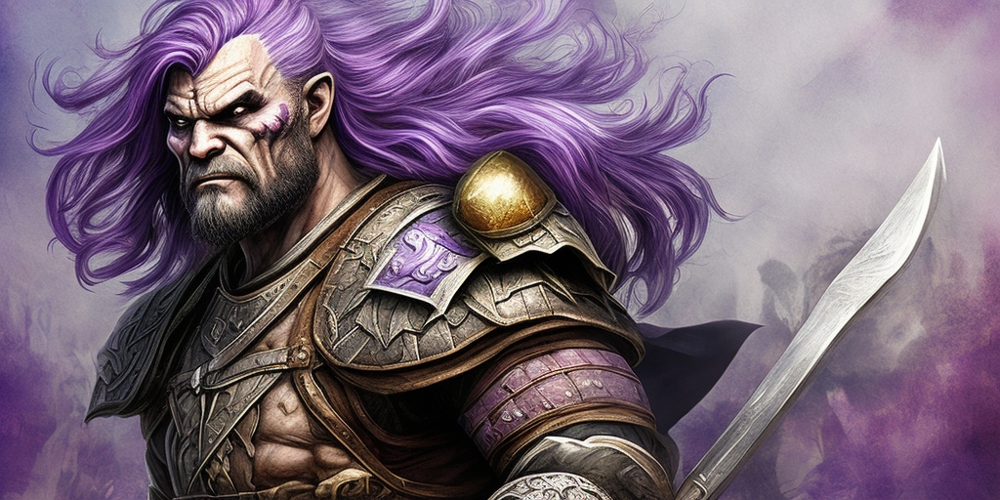

Chapter 1: The Ritual of Rage
Before the Next Full Moon

Before the Next Full Moon
15051.05.06
一早，冒險者們便離開了大學城，朝著方努爾市的方向前進。因為出生於方努爾市的 Midori 較為熟悉，他便帶領著大家，前往搭船去方努爾市的 Lark 渡口。這個時節很接近當地津菈教的節慶：勇者節，因此渡口的人很多都想前往附近的聖 Rayami 島。
途中，冒險者們結識了同樣要渡船的兩名旅客，人類聖騎士 Liliana 和半妖精 Ralf。他們告訴冒險者們前方的橋斷了，無法前往黃金海的渡口，因此需要繞路。
Midori 找到了當地的津菈教教堂–津菈升天教堂（Keinra Ascendance Church），裡面的 Han 神父表示在附近的渡口搭船，如果非津菈教徒，會收取高額的船票，因此在 Midori 的詢問下，Han 神父指引冒險者們去附近的一間房子，並遞給他們一個信封，請他們交給裡面「狂暴戰士幫」的領袖。
抱著懷疑的心，冒險者們來到有著拳頭招牌的房子，敲了敲門，一名有著飄逸紫色長髮的壯漢便開了門。瞭解了冒險者們的來意後，他便邀請冒險者們進入了。
這名壯漢便是狂暴戰士幫在這裡的領袖，Zek。在狂暴戰士幫中，成員都會有個響亮的「鬥名」，而 Zek 的鬥名是「鬥破蒼穹」。而他身邊的金髮壯漢則是「拳出如龍」Wull。
了解了冒險者們的狀況後，Zek 表示狂暴戰士幫算是津菈教的附屬組織，如果加入，便可以以津菈教徒的身份活動，但狂暴戰士幫只歡迎戰士和武僧等類型的勇者加入，同時也邀請了 Beau，並預先給他了鬥名「抓抓耳朵」，但 Beau 對於這兩位看似奇異的人還抱有一些懷疑，沒有馬上答應。Zek 和 Wull 也對妙語如珠的 YHWH 頗感認同，願意為不是戰士的他網開一面，邀請他加入狂暴戰士幫，賜予鬥名「舔舔地板」。
冒險者從 Zek 口中得知，他們的一名成員「巫妖剋星」Essis 前陣子去聖 Rayami 島出任務，卻下落不明，因此希望冒險者們可以接下任務，到島上尋找 Essis 的下落。
Zek 帶著冒險者們到渡口附近最熱鬧的酒館「水手之家」用晚餐，服務生帶著大家來到二樓像包廂的空間，但隔壁桌似乎已經有坐人了。Zek 向冒險者們介紹坐在隔壁桌的三人，是被稱為「馬林船長」的馬林爵士（同時也被稱為「野三逼逼（意為「真實的勇氣」）伯爵」，以及冒險者們先前已經見過的 Liliana 和 Ralf。
三名新夥伴加入了冒險者們，大家坐成一桌。馬林船長向冒險者們說明他負責開船將大家護送到聖 Rayami 島（也被稱為勇士島），同時也是他的封地。近期他們聽說了拉索斯教徒在島上猖獗，綁架島上居民，甚至有偷竊寶石的事件發生。馬林船長也提醒大家在島上要盡可能避免使用魔法，因為魔法被視為津菈的奇蹟。
飯後，Zek 和 Wull 繞道離開，表示要去採買些東西，讓冒險者們先回到狂暴戰士幫宅邸。YHWH 待在水手之家，試圖偷聽馬林船長等三人討論的話題，而 Siri 則偷偷跟蹤 Zek 和 Wull，發現他們買了一些顏料，買完後 Wull 便折返，而 Zek 則去了趟鐵匠鋪，請鐵匠幫忙打磨一把看起來十分有價值的劍。其他冒險者們回到房子後在一樓客廳稍作休息。Wull 回來後，Samael 看見他在爐火邊正在彈奏魯特琴，便也拿出他的魯特琴，加入了他。Beau 則跑到樓上探索，發現這棟房子有三層樓，二三樓各有五間房間。
睡前，Beau 表示自己有意願加入狂暴戰士幫，Zek 便提醒大家隔日早上要一起參與儀式。
當晚夢中，Siri 似乎聽見了一個女聲說著「遠港」，看見一座荒涼小島的破敗港口，一個小女孩走下了船，往島上走……
15051.05.07
一早，冒險者們便下樓用早餐了，唯獨 YHWH 因為身體不適，沒有下來。早餐後，Zek 將一樓的木質地板大力掰開，冒險者眼前出現了一個往地下的通道。在 Zek 的帶領下，冒險者們走到了地下一個圓形的競技場，中間是一個坑洞，準備好要開始進行「狂暴之儀」了。Zek 表示是試煉的時候了，他朝著競技場三側的雕像一一介紹：狗頭人是評議委員會長「狂暴之聲」Sigom III；蛇人是「血蛇狂舞」Yennedat；最後則是冒險者見過的「拳出如龍」Wull。
經過與「雕像」們的激戰後，冒險者們終於勝出。Zek 宣布入會儀式通過，雕像們也終於能卸下他們身上的塗裝。Zek 帶著大家走回一樓，也得知狂暴戰士幫是過去由一名名叫 Sigom 的狗頭人所創立的，他也是 Sigom III 的祖先。Zek 將一把漂亮的劍遞給冒險者們，表示是 Essis 過去常用的劍「異教徒剋星」，Beau 接過後把他收在身上，而 Zek 也給了他新的鬥名「撓撓耳朵」。Zek 最後給了冒險者們一封要給 Essis 的信，請他們遞給 Essis。
中午，Zek 帶著冒險者們往港口去，準備送冒險者們上船。冒險者們看見昨日的馬林船長、Liliana 和 Ralf，以及他們在大學城見到的貓人山田。YHWH 的身體狀況看起來不太好，幾番確認後，他依然跟著大家一起行動，表示不用擔心。
傳送到沃瓦倫的 Ron，突然感到手臂發熱發癢，一瞬間，眼前一片全白，同時感受到一股強大的力量正在拉扯他。當他再次睜開雙眼時，他正仰躺在一間大房子內。他似乎看見遠處有個人影朝他走來……